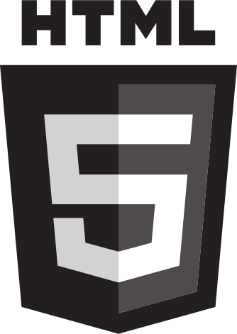
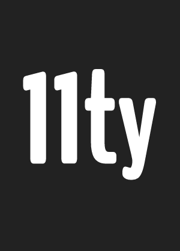
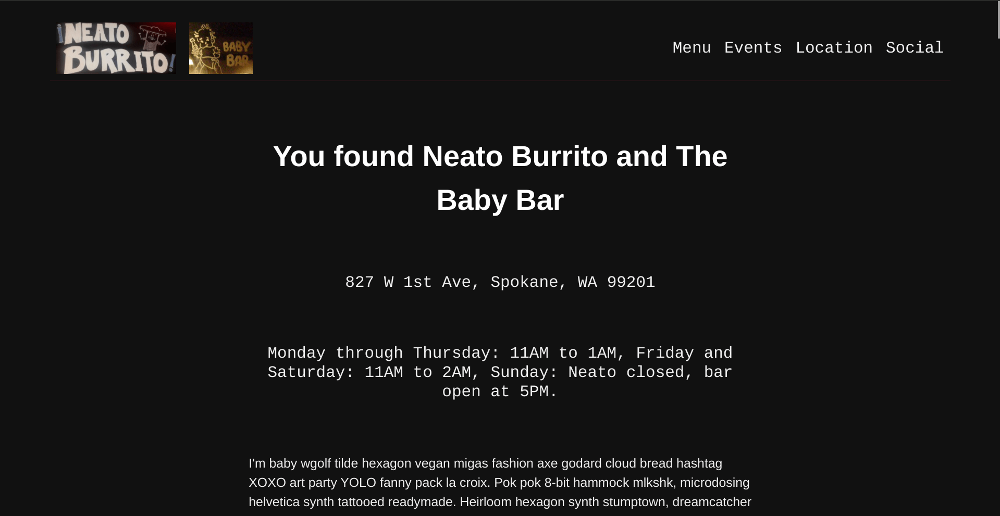
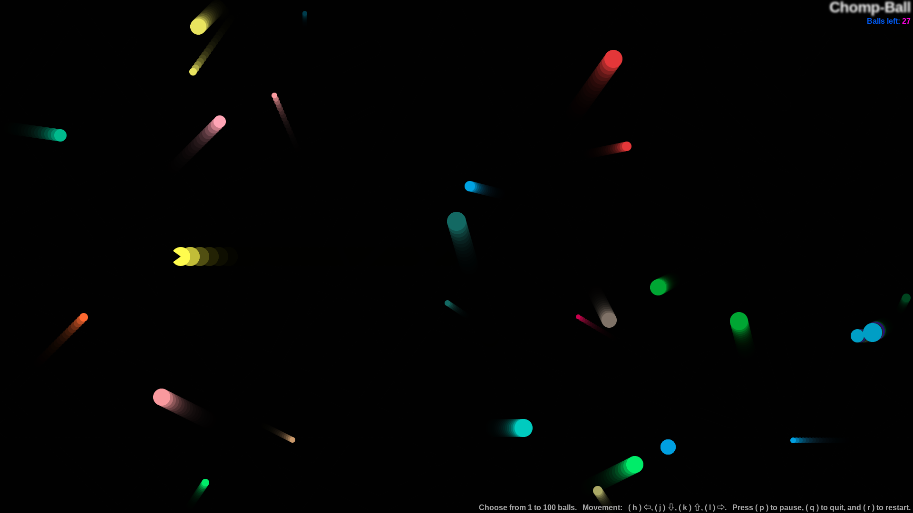
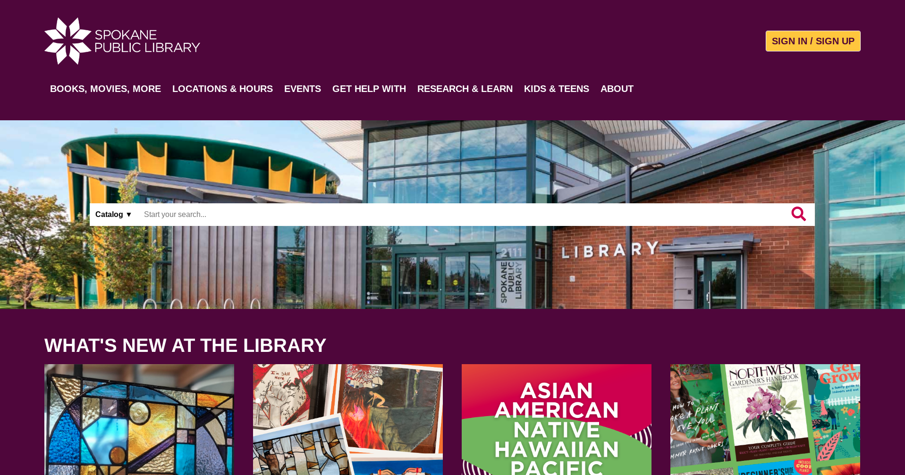

Hey World!
When you meet a coder, you're meeting someone whose core
daily experience is of unending failure and grinding
frustration.
I'm Corey Scanlan, a software engineer who continues to learn and grow by persevering through failure at the craft of web application development. I strive for a rewarding career of collaborative work helping others while maintaining a healthy work-life balance.
My programming interests include:
- Accessibility
- Application architecture
- Open source projects, of which I hope to someday contribute
- Progressive enhancement
- Readable, maintainable, performant code
- Reusable custom elements
- Testing, as it seems so important to reliable and maintainable applications
- Valid and semantic HTML
- The Web is the platform
Some of the technologies I've used along my way:
-  HTML5
-
 CSS 3
CSS 3
-
 JavaScript
JavaScript
-
 Python
Python
-

-
 Vue.js
Vue.js
-
 React
React
-

-
 Debian
Debian
-
 C
C
-  Elventy
-
 Flask
Flask
-

-
 Linux
Linux
-

-

- npm
-
 SSH
SSH
-
 Vim
Vim
-
 VS Code
VS Code
Some of the technologies I want to learn:
- Nuxt
- I want to learn Nuxt because I want to get stronger in Vue.js and to stay aware of the latest web development techniques and approaches, and because I like the options of building applications with reusable Vue components and using one tool to generate static sites, server side rendered sites, or a hybrid combination of the two approaches.
- Rails
- I like that Ruby on Rails is opinionated and follows conventions, is beloved by many developers, is a great framework for start-ups, and is used by many major websites.
- Rust
- I'm interested in Rust for its C-like performance and safer memory management, because of it's integration into the Linux kernel, its ability to compile into WebAssembly, its appreciation as a "most loved programming language", and its support from Mozilla Research.
- Svelte
- I respect that Svelte appears simple to write, compiles to vanilla JavaScript, and ships with only the code an application needs.
- Vite
- Vite was made by the creator of Vuejs, so I'm eager to give it a shot as an opinionated, faster, and leaner build tool.
- Web Components
- Web Components are exciting as reusable components that are vendor and framework independent, based on official web standards, and supported by all major browsers.
Some of my projects (In Development):
- Business mock-up for Neato Burrito and the Baby Bar 
- I wanted to build a modern, responsive site from a blank html page. Neato Burrito has never had a website, and the owners are feeling it may be time, especially as a central location to get their menu out to the public. This site's simple DIY structure and design fits the location's aesthetic.
- See the Code ~ Visit the site
- Chomp-Ball 
- Started out as a JavaScript Object Oriented Programming tutorial that I built into a Pac-Man like game and tool that uses the ADM-3A and subsequently vi (and its derivatives) cursor movement keys to move the Chomp-Ball character around the screen and help the player establish those movements into their muscle memory.
- See the code ~ Play the game
- Django clone of the Spokane Public Library website 
- Public libraries are my favorite governmental institutions and we have a great network of recently updated libraries in our area. So to build a strong foundation in the basics of using the Django web framework, I've been cloning the Spokane Public Library’s website with Django. I intend to consider this project complete once I’ve reproduced most of the essential features of the library's catalog site; search, user in/sign out, librarian accounts, access to the Django admin, etc…
- See the code ~ Visit the site
Some project ideas that I hope to build:
- A cocktail recommendation app - When working as a bartender, guests often ask for your advice as to what they should have to drink. You'd love to take the time to have a discussion long enough to determine just the right drink for their preferences, mood, and occasion. But, when it's busy and you're working alone or with a small staff, there just isn't enough time to take 5 or more minutes with each customer and and still be available for everyone. I plan to design and build a web-app someone can bring up on their phone, answer a few questions, and spin sort of a roulette like randomizer that kicks out a couple or few suggestions. I'd like to add the option for a bartender to create an account and modify the suggestions to include only drinks that an establishment has the ingredients and equipment to make, and for the bartender to include their personal favorites and recommendations. I can imagine including user accounts for users to rate drinks, possibly suggest inclusions, and definitely save their favorites for their next outing. As someone who prefers to have a strong ale, and to visit breweries, I'd like to also incorporate or develop a second application for beer. And if both or either of these ideas prove popular, wine suggestions and food pairings could eventually be added.
- A full client side SSG with a WYSIWYG editor that can save itself to GitHub/Lab and/or ftp and deploy to simple hosting services
- A simple, asynchronous chess game that teaches players chess algebraic notation by displaying the chessboard as a grid of text based coordinates and pieces that only allows turn movements by a player properly describing and recording their intended move - I'd like at some point to add the option for players to select their font, their font color, colors of their chessboard, and duration of their games. And then eventually, for players who feel that they've mastered algebraic notation, add the option to have a simple touch based chess game with either text based coordinate spaces and pieces or traditional spaces and symbolic pieces that lets them play multiple asynchronous games with friends.
- A game based on Magic The Gathering basic lands; 2 players on separate machines - As far as I know, this game is only know to a small subset of players and does not currently exist in any digital form.
- A friends business site rebuilt with modern tools
- A personal blog - Today I learned, explained like I'm five (TLI_ELI5); hopefully clear, short, and simple explanations of new topics I'm learning; mostly programming focused
Contact Me
I have to be honest that I've never really taken to social media. Myspace didn't have much appeal to me when it was new and nothing since has really grown on me either. However, I have held on to a few of these accounts to stay abreast of the news, my hobbies, and local events, or because I needed one account or another for various jobs over the years. The best way to reach me is to send me an email, and I'll do my best to respond promptly.